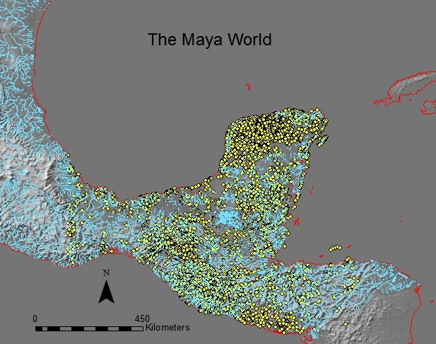

//===============DEFINE STYLE========================== //===============ORDER THE WEB CONTENT==========================
Geography 591 Problems: Mapping Maya Isotopes
Maya Diet and Subsistence
Caries: A "Disease Process"
Iron-Deficient Anemia: Porotic Hyperostosis and Cribra Orbitalia
Stable Isotopes: Chemical Signatures of Ancient Diet
Mapping Information
The Map
Link to Geography 585 Internet Mapping, Spring 2013 Home Page

Bill Brown wbrown@unm.edu
Back to Top